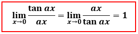
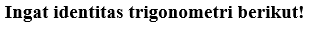
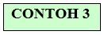
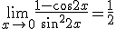
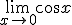

Dari contoh limit diatas dapat dilihat bahwa f(x) merupakan fungsi trigonometri, sehingga bentuk limit diatas disebut limit fungsi trigonometri. Dalam penyelesaian limit fungsi trigonometri dapat menggunakan metode substitusi, namun jika metode substitusi menghasilkan bentuk tak tentu seperti , maka dapat menggunakan metode pemfaktoran, perkalian sekawan, rumus-rumus identitas trigonometri, ataupun dengan limit fungsi trigonometri khusus.
Ayo Bereksplorasi!
Menurut kalian apakah benar nilai dari limit fungsi trigonometri khusus diatas? Eksplorasilah menggunakan cara pendekatan nilai melalui media berikut!
Tahukah kalian dengan limit fungsi trigonometri khusus dapat ditunjukkan bahwa:
Kerjakan pada buku latihan!
Dengan menggunakan limit fungsi trigonometri khusus, cobalah buktikan nilai dari limit fungsi diatas!
Pembuktian:
Misalkan ax = u. Jika x 0 maka u 0, sehingga:
Pembuktian:
Misalkan ax = u. Jika x 0 maka u 0, sehingga:
Pembuktian:
Pembuktian:
Pembuktian:
Pembahasan pembuktian rumus diatas!
Pembuktian:
Misalkan ax = u. Jika x 0 maka u 0, sehingga:

Pembuktian:
Misalkan ax = u. Jika x 0 maka u 0, sehingga:
Pembuktian:
Pembuktian:
Pembuktian:
4.1 Menentukan Nilai Limit Fungsi Trigonometri
Dalam menentukan nilai limit fungsi trigonometri terdapat beberapa cara yang dapat dilakukan, agar lebih memahami berikut akan disajikan pembahasan dari contoh sebelumnya.
1.
Penyelesaian:
Jadi, nilai
2.
Penyelesaian:
Dengan mensubstitusi ke fungsi maka diperoleh hasil yang merupakan bentuk tak tentu. Untuk memperoleh hasil dari dapat menggunakan cara berikut.

Jadi, nilai

3.
Penyelesaian:
Dengan mensubstitusi x = 0 ke fungsi , diperoleh hasil bentuk tak tentu yaitu . Untuk memperoleh hasil dari dapat menggunakan cara berikut.
Jadi, nilai 
4.
Penyelesaian:
Dengan mensubstitusi ke fungsi maka diperoleh yang merupakan bentuk tak tentu. Untuk memperoleh hasil dari dapat menggunakan cara berikut.
Jadi, nilai
5.
Penyelesaian:
Dengan mensubstitusi x = 0 ke fungsi maka diperoleh hasil bentuk tak tentu yaitu . Untuk memperoleh hasil dapat menggunakan . Sehingga diperoleh:
Jadi, nilai
Kerjakan soal berikut pada buku latihan!
Tentukan nilai limit dari fungsi trigonometri berikut!
1. 
2.
3.
4.
5.
1. Cara Substitusi
2. Pertama gunakan cara memfaktorkan!
Gunakan limit fungsi trigonometri khusus!
Misalkan (x - 1) = u. Jika x 0, maka u 0 sehingga,
 , maka dapat menggunakan metode pemfaktoran, perkalian sekawan, rumus-rumus identitas trigonometri, ataupun dengan limit fungsi trigonometri khusus.
, maka dapat menggunakan metode pemfaktoran, perkalian sekawan, rumus-rumus identitas trigonometri, ataupun dengan limit fungsi trigonometri khusus. 

 0 maka u
0 maka u  maka diperoleh hasil
maka diperoleh hasil